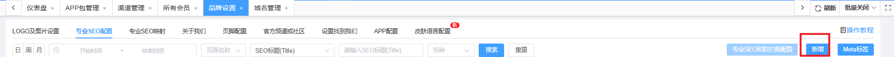
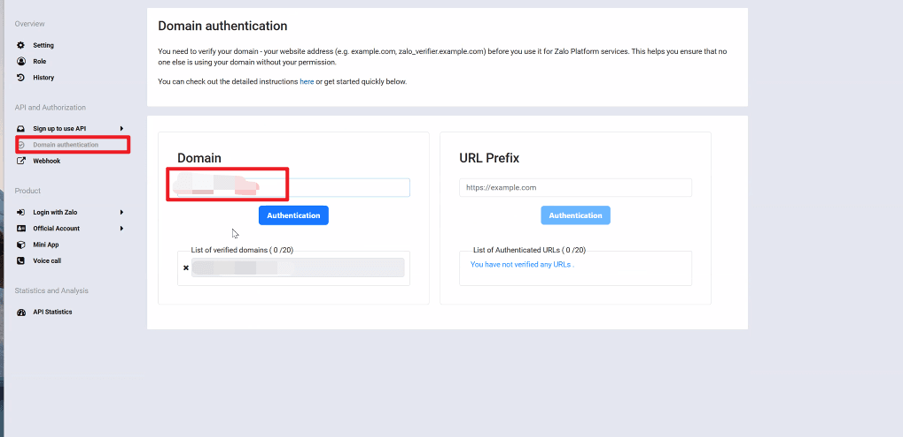
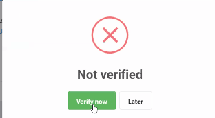
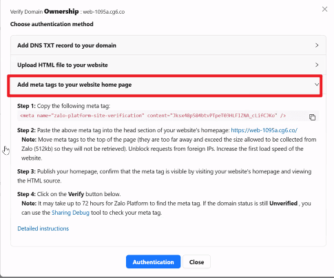
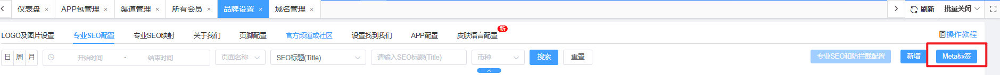
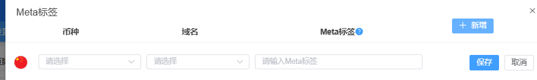
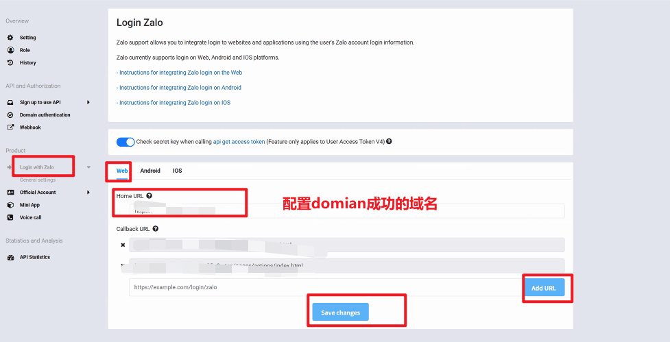

Web常见问题
1，路径：运营管理-品牌设置-专业SEO-新增一条域名

2，登录zalo，如下图，域名配置Domain

3，会报错

4，选择第三个

5，回到专业SEO配置标签，把第四步这个标签配置到该域名里


6，等30分钟，重新添加，提示成功，没成功继续等待
7，去loguin zalo 配置上一步成功的域名点击保存

这一步需要注意 域名后面要加后缀 /pages/actions/index.html
例如domian的域名是www.google.com加上后缀 www.google.com/pages/actions/index.html